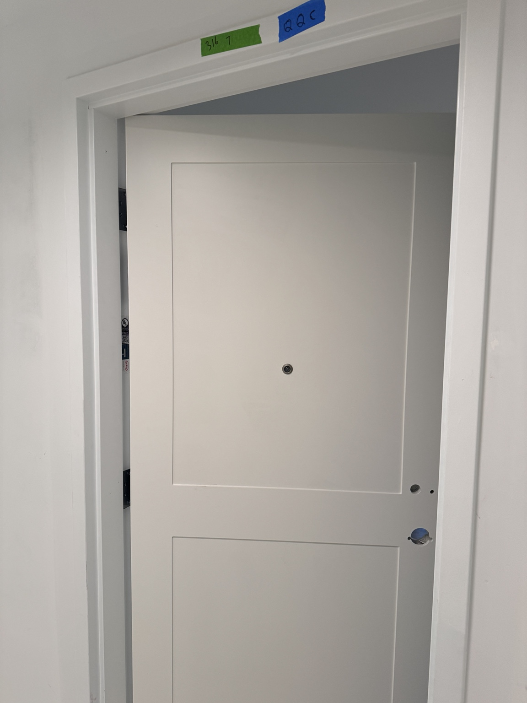
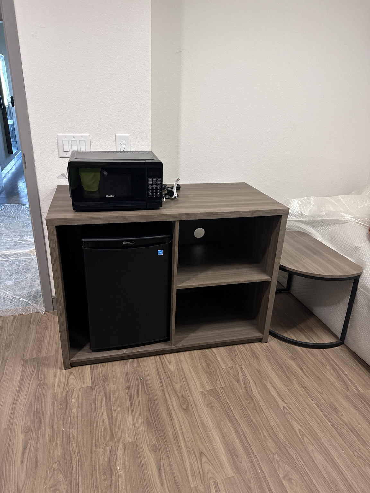
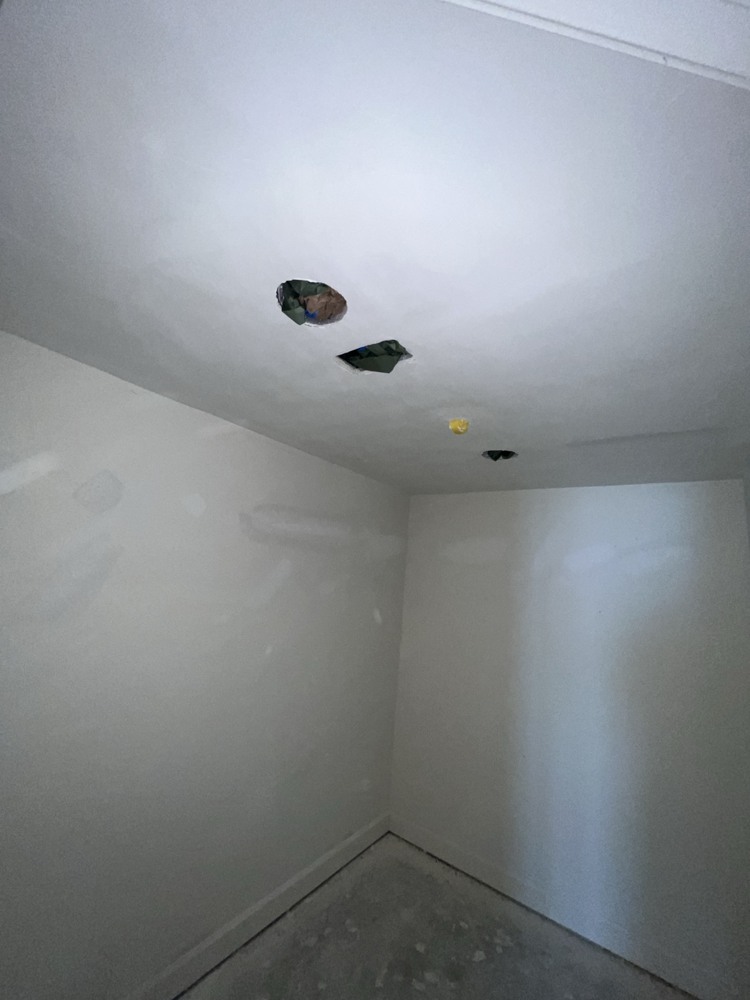
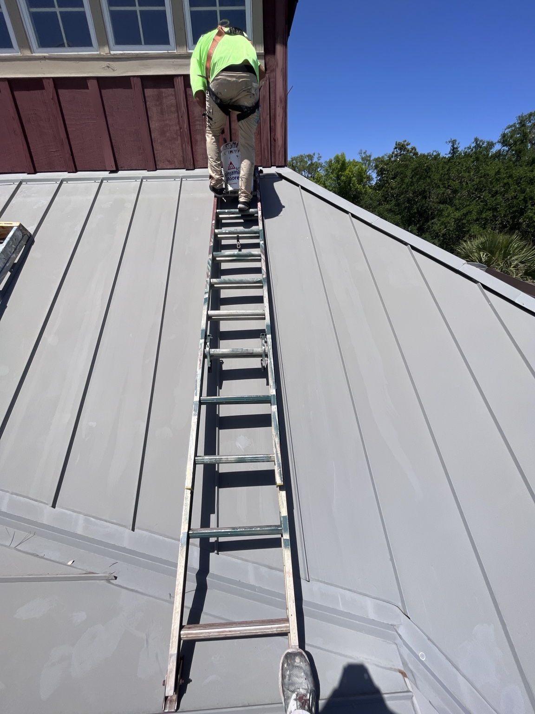

REAL WORK · REAL SOLUTIONS
OUR WORK
A look at hands-on installation, improvement, painting and problem-solving work. More completed projects will be added as the gallery grows.
INSTALLATION & ASSEMBLY
Doors, Furniture & Fixtures
Door installation, furniture assembly, fixture placement and blueprint-based layout work with attention to fit, alignment and finish.



PAINTING & FINISHING
Careful Prep. Clean Coats. Crisp Finishes.
Interior walls and ceilings, doors and exterior surfaces. Proper masking and preparation help protect surrounding finishes and control overspray, followed by even, consistent coats for a clean finished appearance.




Have a project that needs a simple solution?
Tell us what you need done and we’ll take a look.
Get a Free Quote →